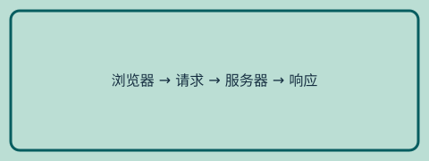

1.2.4.4 响应式图片：布局、资源选择与构图
CSS控制图片盒子，srcset/sizes协助选资源，picture允许按条件选择不同构图或格式。

实际计算与观察
改变一个条件，预测结果，再到 DevTools 核对实际规则。
本例需要回答
- 改变视口跨过500px，查看图片currentSrc。
- 切换固定展示盒的object-fit，观察裁切。
- 暂时禁用图像，核对alt和正文仍解释请求/响应。
CSS控制图片盒子，srcset/sizes协助选资源，picture允许按条件选择不同构图或格式。

改变一个条件，预测结果，再到 DevTools 核对实际规则。